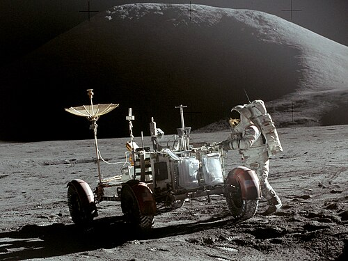

Apollo 15 marked the beginning of NASA's "J Missions," a series of longer and more scientifically ambitious lunar expeditions. Launched on July 26, 1971, the mission carried Commander David Scott, Lunar Module Pilot James Irwin, and Command Module Pilot Alfred Worden.
Unlike earlier missions, Apollo 15 was designed to maximize scientific exploration. The mission included longer stays on the Moon, more advanced equipment, and the first use of the Lunar Roving Vehicle, allowing astronauts to travel much farther than ever before.
Following a successful launch aboard a Saturn V rocket, Apollo 15 entered lunar orbit and prepared for landing operations. Scott and Irwin entered the Lunar Module Falcon while Worden remained aboard the Command Module Endeavour.
The astronauts landed in the Hadley-Apennine region, one of the most geologically diverse areas ever visited during the Apollo program. Scientists selected the site because it contained mountains, valleys, and volcanic features that could provide insight into the Moon's formation.
One of Apollo 15's most important innovations was the Lunar Roving Vehicle, commonly called the Lunar Rover. This battery-powered vehicle allowed astronauts to travel several miles from their landing site and dramatically expanded the area they could explore.
The rover enabled Scott and Irwin to visit multiple geological locations that would have been impossible to reach on foot. They conducted detailed studies, took photographs, and collected samples from a variety of lunar environments.
The rover became one of the most successful pieces of equipment ever used during the Apollo program.
Apollo 15 returned approximately 170 pounds of lunar rocks and soil to Earth. Among the most important discoveries was the "Genesis Rock," a sample believed to have formed during the Moon's earliest history.
The astronauts also deployed scientific instruments that continued collecting data long after they had returned to Earth. These instruments helped researchers study lunar seismic activity, heat flow, and other geological processes.
Meanwhile, Alfred Worden conducted extensive scientific observations from lunar orbit using instruments mounted in the Service Module.
After nearly three days on the lunar surface, Scott and Irwin launched from the Moon and reunited with Worden in orbit. The crew then began the journey home.
Apollo 15 demonstrated that astronauts could conduct meaningful scientific exploration on another world. The mission's success transformed the Apollo program from a series of landing demonstrations into a sophisticated scientific endeavor.
Today, Apollo 15 is widely regarded as one of the most productive lunar missions ever flown.